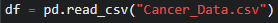
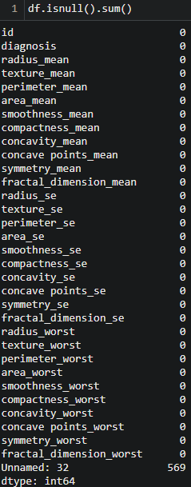

Differentiating Cancer Cells
Introducation to the problem
Cancer is one of the most feared groups of diseases in the world because your own cells start causing your body damage. One of the difficulties of treating cancers is that there are just too many factors that cause them. But also, once you get them, since they are in the end your own cell mutated, they can be difficult to treat without impacting healthy cells. Due to the similarity, detecting many types of cancer early on is also difficult. In this project, we will use a cell date set to answer: “Can a model be created that can, with high success, determine which mutated cells are dangers and which are not?”.
Introducation to the data
The dataset we will use was downloaded from Kaggle.com. The dataset was posted by Erdem Taha, a computer engineering student at Istanbul Arel University. The data was last updated six months before this analysis. The dataset is a collection of 569 cells, and there are 32 columns of data. The first column is the ID. The second is the diagnosis. As in whether the cell is benign or malignant, and the rest of the columns have many physical characteristics of the cell.
Pre-processing
(Code File)
We start dataset processing by loading it as a Pandas dataframe.

Next, check the data for nulls to see if we need to clean the data.

The last value, 'unnamed:32' contains only nulls this is due to some file formatting issues.
 The data doesn't require any more cleaning, so we move on to preparing for model creation.
First, we split the dataframe into two, one holding the features of a cell and
another hold its category. We also drop ID during this step because
we don't want this arbitrary value to impact our model.
The data doesn't require any more cleaning, so we move on to preparing for model creation.
First, we split the dataframe into two, one holding the features of a cell and
another hold its category. We also drop ID during this step because
we don't want this arbitrary value to impact our model.
 First, let's see what the split of categories is.
The split is 2 to 3, with more Benign cells.
First, let's see what the split of categories is.
The split is 2 to 3, with more Benign cells.
 Since we are going to be using a learning algorithm,
we split the data into training and testing data.
For no particular reason, I choose to use 80% of the
data for learning and the other 20% for testing.
Since we are going to be using a learning algorithm,
we split the data into training and testing data.
For no particular reason, I choose to use 80% of the
data for learning and the other 20% for testing.
 Now that we have our data ready we move on to training our model.
Now that we have our data ready we move on to training our model.
Modeling/Visualization
So now we must decide which type of model we should create for this data.
There are four categories K-Nearest Neighbors, Naive Bayes, Support Vector Machines, and Random Forest.
I chose SVM by the process of elimination.
KNN is out because it is sensitive to outliers and also doesn't work well with large datasets.
Random Forest is out because it can overfit the data. Despite the lower chance, we don't choose it since
we have more options left.
Lastly, we remove Naive Bayes because it assumes all features to be independent.
This is an issue because based on the pairplot below we can see there are high corrolation between many
features.
So we go with SVM, which is scalable to large datasets and
would still work well with potentially overlapping data.
Its speed is also competitive with other options with this large dataset.
 We still have to decide which kernel to use for Support vector machines. We create a model starting with
a linear kernel.
We still have to decide which kernel to use for Support vector machines. We create a model starting with
a linear kernel.

Evaluation
Now we will test the f1 score of the model.
We chose f1 score over other options because
both false positives and false negatives are harmful.
False positives where a benign cell is indicated as malignant cell would mean
someone would get chemotherapy, which can have other long term negative impacts.
False negatives where a malignant cell is indicated as a benign cell mean we miss cancer cells,
which is the whole point of this analysis.
 The high f1 score in the previous section suggests that this SVM model is
highly above the baseline for predicting whether a cell is malignant.
This was with no more fine tuning past the simplest and default options.
With more data and more finely tuned variables,
creating a model with a higher f1 score should be possible.
Those are beyond the scope of the current analysis.
The high f1 score in the previous section suggests that this SVM model is
highly above the baseline for predicting whether a cell is malignant.
This was with no more fine tuning past the simplest and default options.
With more data and more finely tuned variables,
creating a model with a higher f1 score should be possible.
Those are beyond the scope of the current analysis.
Storytelling
Based on this modeling, it seems we can get a few details about the physical characteristics of cells that make it possible to predict with high certainty which cells are malignant. This means the challenges of detecting harmful cancer's cells may not be there physical characteristics but some other features that we are not able to detect and read easily. Things such as where to look for these cells in the first place.
Impact
As our technology advances and our ability to create microscope technology or biology grows, understanding which physical characteristics can be used to determine whether a cell is malignant can help us design robots or biology that can directly interact with and attack only malignant cells. This analysis proves that, while not perfect physical characteristics are a viable option, differentiating between benign and malignant cancer cells
References
My Dataset: https://www.kaggle.com/datasets/erdemtaha/cancer-data